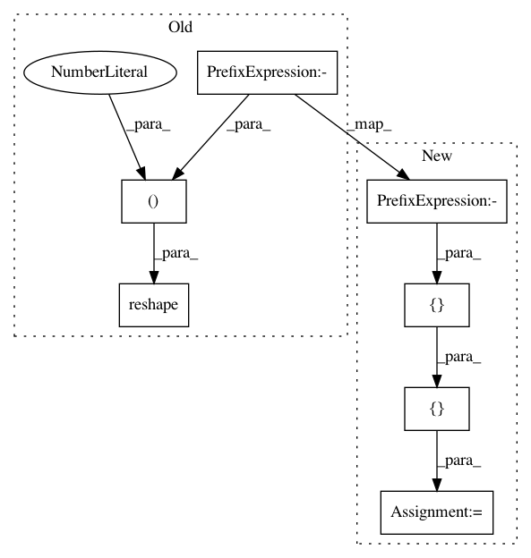

55d342a0d0e44f3420877a8e9452adba7933ae72,gpflow/kernels/stationaries.py,Stationary,scaled_square_dist,#Stationary#Any#Any#,38
Before Change
X2 = X2 / self.lengthscale
X2s = tf.reduce_sum(tf.square(X2), axis=1)
dist = -2 * tf.linalg.matmul(X, X2, transpose_b=True)
dist += tf.reshape(Xs, (-1, 1)) + tf.reshape(X2s, (1, -1))
return dist
def scaled_euclid_dist(self, X, X2):
After Change
Xs = tf.reduce_sum(tf.square(X), axis=-1)
X2 = X2 / self.lengthscale
X2s = tf.reduce_sum(tf.square(X2), axis=-1)
dist = -2 * tf.tensordot(X, X2, [[-1], [-1]])
dist += broadcasting_elementwise(tf.add, Xs, X2s)
return dist
def scaled_euclid_dist(self, X, X2):
In pattern: SUPERPATTERN
Frequency: 3
Non-data size: 7
Instances
Project Name: GPflow/GPflow
Commit Name: 55d342a0d0e44f3420877a8e9452adba7933ae72
Time: 2019-04-11
Author: art.art.v@gmail.com
File Name: gpflow/kernels/stationaries.py
Class Name: Stationary
Method Name: scaled_square_dist
Project Name: GPflow/GPflow
Commit Name: f3c511060ce62072a34a50319237d28b82d10448
Time: 2020-08-27
Author: dutordoirv@gmail.com
File Name: gpflow/mean_functions.py
Class Name: Constant
Method Name: __call__
Project Name: GPflow/GPflow
Commit Name: 5a945d67b37120610880c3323224a4e86404ae1d
Time: 2020-08-27
Author: dutordoirv@gmail.com
File Name: gpflow/mean_functions.py
Class Name: Constant
Method Name: __call__